In this project, we experienced different steps in implementing a rasterizer. We implemented sampling to add colors and textures to shapes. We started from basic sampling to more complicated ones such as bilinear sampling. During the journey, we took steps to improve image quality, such as removing jitters with supersampling and interpolating colors with Barycentric coordinates. (TBA)
In this part, we implemented an approach to rasterize triangles with a sample rate of one. First, we wrote a function to determine if a pixel is inside a triangle. We used the method discussed in class — the point-in-triangle three line tests.
In the test, we computed the lines formed by two vertices and compared the position of the pixel to the line. We can determine which side of the line the pixel falls into. After performing this test three times with three lines, we can determine whether
the pixel is in the triangle. If the pixel is in the triangle, we fill the pixel with color. In this way, we fill the shape with single color because we sample each pixel and perform the above test repeatedly.
My algorithm is no worse than one that checks each sample within the bounding box of the triangle. The reason is we calculated the minimum and maximum of x and y coordinates
of the three vertices. By traversing from the minimum to the maximum, we only sample pixels in the bounding box of the triangle.
One problem we had in this problem is that we didn't take into account the order of the three points at first —— whether they are in clockwise or counterclockwise
order.
Below are two images of basic/test4.svg with the default view and zoom inspector. The zoom inspector shows that there're jaggies on the boundary.
|
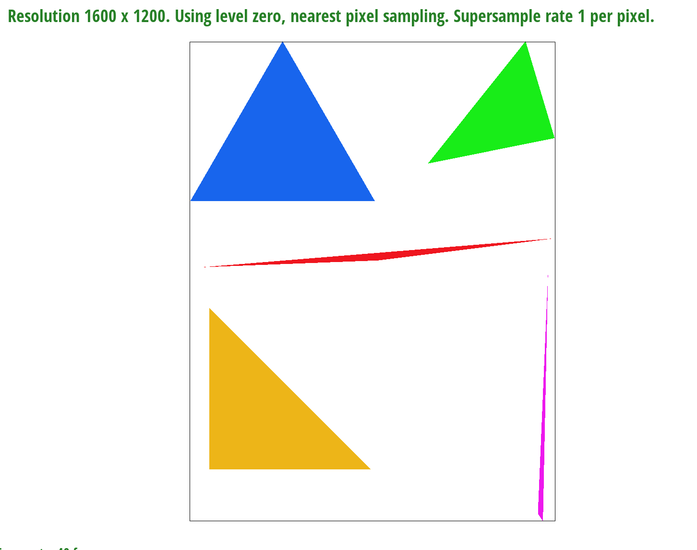
|
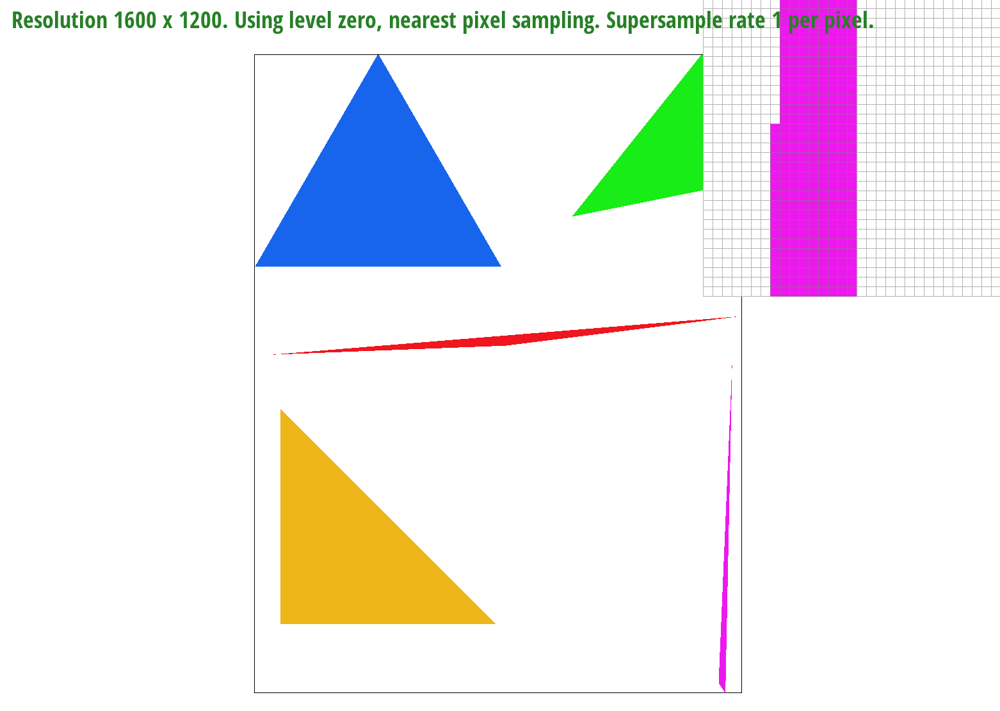
|
To implement supersampling, we stored the information about pixels in a list called sample_buffer. Then we processed the information, calculated the value
we want, and put into a rgb_framebuffer_target. That lists contains the ultimate color information that we want to apply on pixels. They key in supersampling is using more memory to
store information and resize the memory to accommodate that. In addition to the sampling algorithm we have in part 1, we added two additional for loops to consider points inside a larger pixel. We perform a point-in-triangle tests
on these points and if they're inside, we assign color value to them and put the information in the sample_buffer. We also modified the resolve_to_framebuffer function.
We added a for loop to find out the values in the list that correspond to points inside a pixel. We took the averages of the color values and put them in
rgb_framebuffer_target. The for loops in the rasterize triangle and the for loop in resolve_to_framebuffer correspond to the supersample and downsample concepts.
In the supersampling step, we considered the color values of multiple points inside a pixel. In the downsampling step, we averaged these color values and assigned
the average to be the color value of the large pixel. These two steps mostly work on pixels on the boundary, because only when points are on the boundary, some points are inside
the triangle while others are not. Thus we can smooth out the values by taking the average of these points.
Supersampling is useful because it helps smooth out the edges and achieve the effect of antialiasing.
The concept behind antialiasing is to remove frequencies that are above the Nyquist frequencies before sampling. An example is
1-pixel-width box filter. The filter attunates the frequencies whose period is less than or equal to 1-pixel-width.
In our case, the supersampling method approximates the effect of 1-pixel-width box filter because take average of smaller points
and in a way "account for their frequencies".
In the implementation, we encountered several issues. We had replicates of our shapes before, which was caused by incorrect resizing of rgb_framebuffer_target.
We also blurred and widened the edges of the canvas box, which was caused by assigning the color values repeatedly and average down the color value when we
didn't sample multiple values in the first place.
Below are the results we got with different sample rates. With sample rate one, we saw many jaggies becuase we didn't take average and smooth out the
edges. With sample rate four, we took average of four points in one pixel and thus made the edges smoother. With sample rate sixteen, we considered more points inside one
pixel and thus got smoother edges with lighter weights on the edge. The idea behind these results is that we considered the points that are not in the pixels
and used them to make the edges ligher.
div align="middle">
|
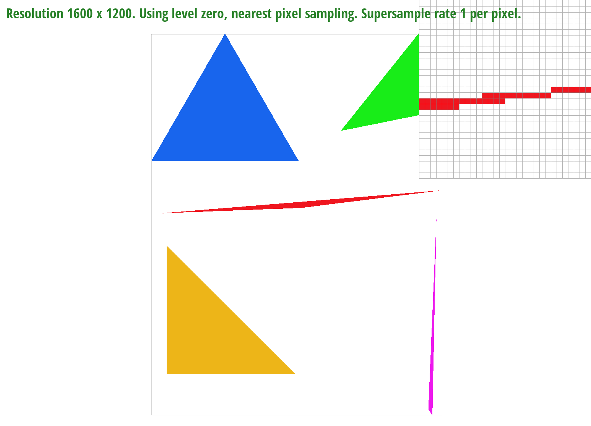
|
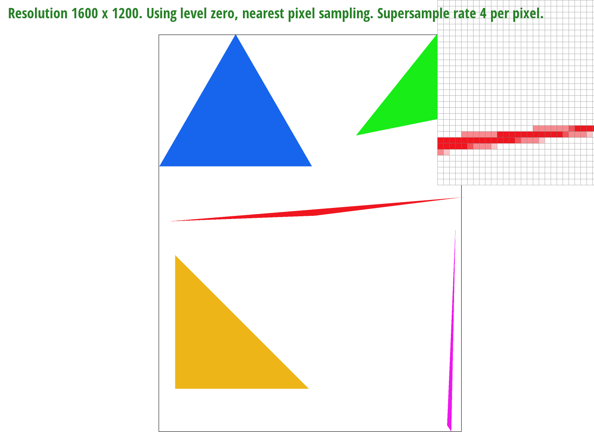
|
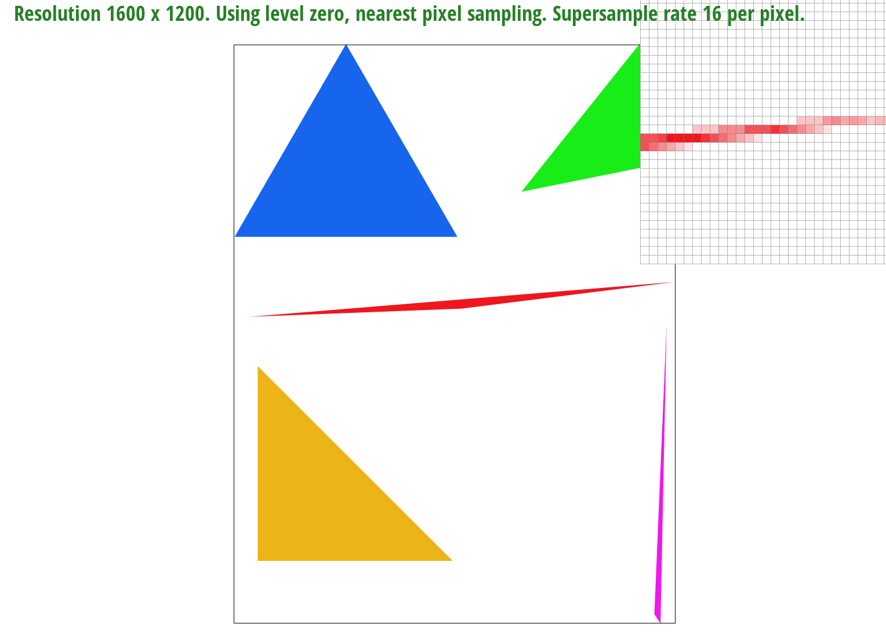
|
Oh no this poor guy accidentally took his head off. I first moved the code for the head part to the left arm part. Then transformed the two arms by moving down 20 pixels and rotating the leftmost arm by 45 degrees. Then I moved the second leftmost arm up by 20 to compensate the previous transform.
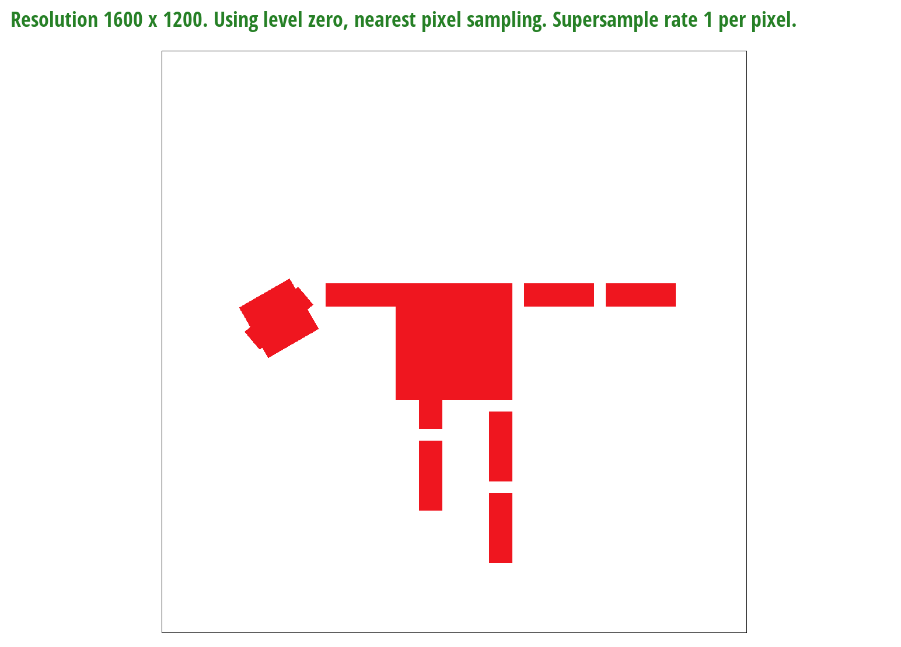Barycentric coordinates is a method to represent the position of a pixel relative to three vertices of a triangle. Suppose the three vertcies of a trangle is A, B, and C, and the point we are trying to represent is P. The position of a P can be represented as a linear combination of A, B, and C. The corresponding weights are alpha, beta, and gamma. If all three weights are non-negative, then P is inside the triangle. Below is a picture that explains the linear combination and weights. We can also think of the weights as the area of the three corresponding small triangles.
|
|
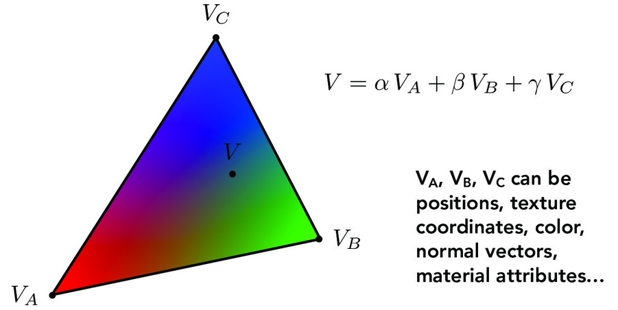
|
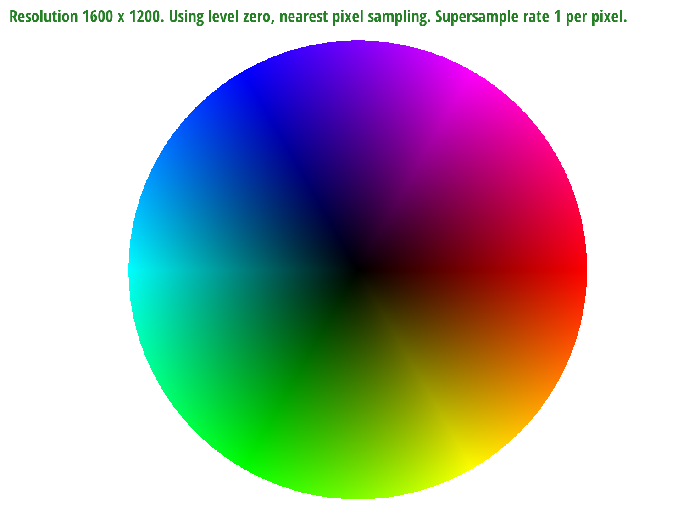
|
Computer screens display images using discrete set of block, pixels. These pixels can be used to portray a variety of colors, but it is necessary to determine what specific color they need to show. This is where pixel sampling comes in. Pixel sampling is when a pixel is checked to see if it is within the region of an image, and if so what color it should be.
For our texture mapping, we sampled all pixels in the bounding box of a triangle to check if they were inside of it. Once this was done, the location of the pixel was then mapped to a texture mapping to determine what color needed to be applied. To map the pixel from pixel-space to texture-space, we calculated the barycentric coordinates of the current sample. Taking the texture space vectors for each vertex, we multiplied them by their corresponding barycenter coordinates and added them together to find the vector of our current sample in texture space. This coordinate mapping works since we have the coordinates in texture space that correspond to each vertex. Then, by using the properties of the barycenter and finding a relationship between the vertices and the currently sampled pixel, we can then map that relationship onto the vertices in texture space to find the coordinates of our sample there. This was the method we used to determine what color each pixel in an image needed to be based on the applied texture.
When mapping from pixel space to texture space, you may not end up with a perfect integer for a coordinate, and may end up on a point that is in between. This results in two different ways to determine what color the pixel should be: nearest and bilinear sampling. Nearest is the simplest and most straightforward approach. The color used will be the color at the nearest integer coordinate in the texture mapping. Objects in real life are continuous in color however. The colors in a texture mapping may be stores in a discrete manner, but we can approximate a continuous function through bilinear sampling. This method takes the colors of the four closest texture coordinates, and takes a weighted average based on the proximity of the mapped coordinate to that point, and provides this color to the pixel.
Here when comparing nearest sampling to bilinear sampling with a sample rate of 1, you can see that the lines on the birds faces have a smoother transition between the white and black colors. The averages of the texture color helps makes the change look better and less sharp and jagged as it does with nearest sampline.
At a sample rate of 16, the change between nearest and bilinear sampling is less apparent. This is because with supersampling, the color of the pixels is already being averaged from the values of the subpixels. This results in the averaging from bilinear sampling becoming unnecessary.
There is a larger difference between the two sampling methods at smaller sample rates. This makes the averaging of the colors from bilinear sampling become more apparent than at higher sampling rates when averaging is already taking place.
|
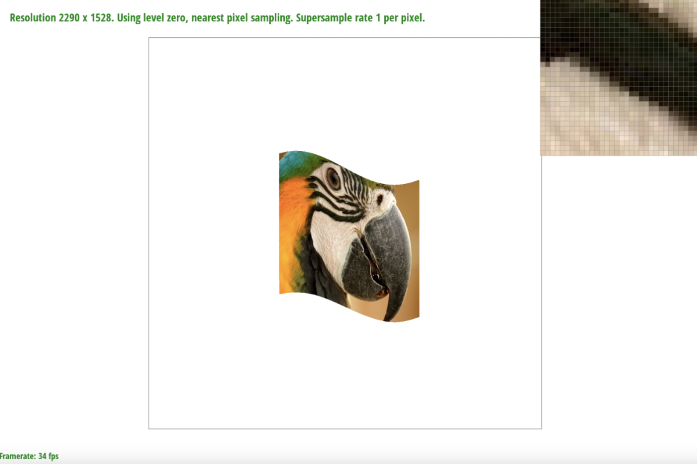
|
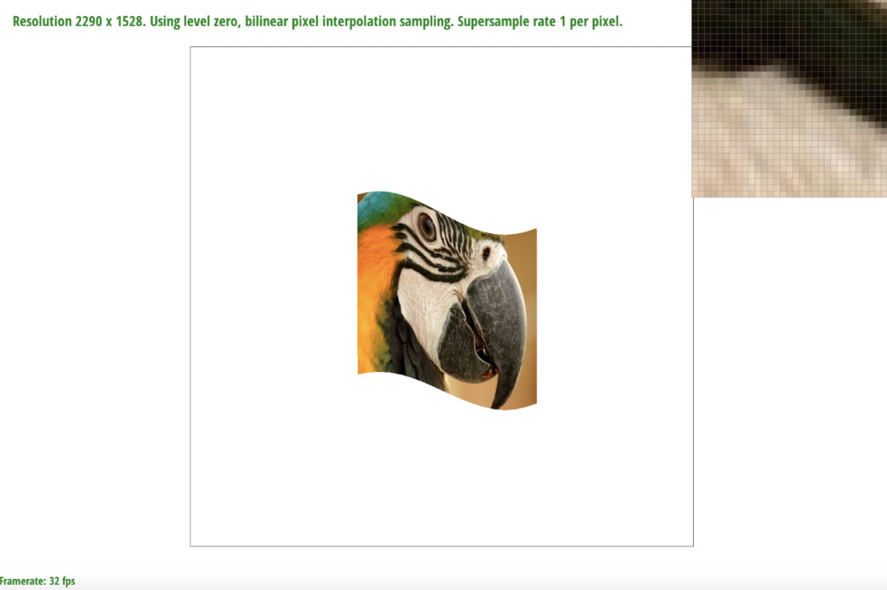
|
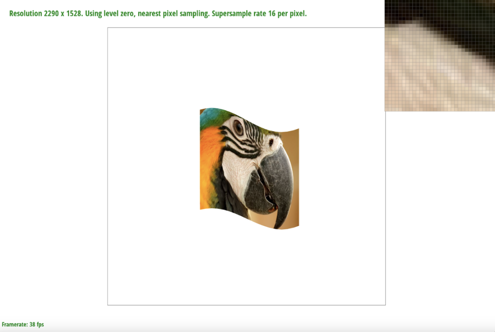
|
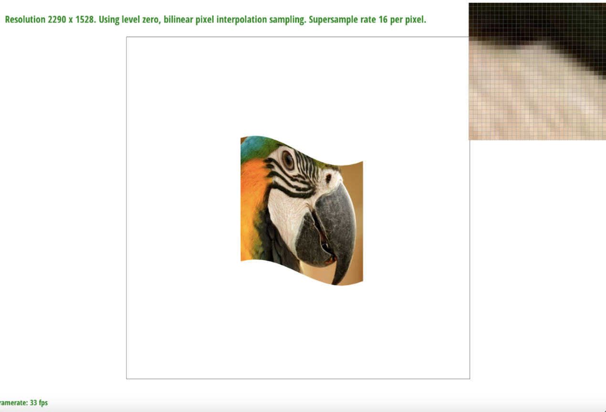
|
When mapping from pixel space to texture space, both axes become scaled as well, causing distortions in the area that a pixel would have covered in texture space. Level sampling determines what is the scale factor of the sides of the new area covered by the pixel, and uses images of varying resolutions to more accurately provide a color for the pixel. We implemented this by finding the derivative of u and v-coordinates in texture space in terms of x and y-coordinates in pixel space. Finding the magnitude of the derivatives in thers of x and in terms of y shows by what factor the sides of the pixel are being stretched and in what direction. We can approximate this area by using a square of side length equal to the largest of the two stretch factors, either x or y. The level is then found by taking the log base 2 of this stretch factor.
Similar to pixel sampling for textures, level sampling can also be done through finding the nearest integer level to the one calculated, or by using linear interpolation to better approximate a continuous change between levels.
Pixel Sampling - Nearest sampling results in aliasing, but it is faster and uses less memory then bilinear sampling. This is because nearest only checks the closest texture color that needs to be mapped, while with bilinear there are three additional color tiles that are check and then averaged for each pixel that is colored.
Level Sampling - Zero leveling sampling is the fastest and most memory efficient method since only the full resolution texture map is used and no additional calculations are done. When level sampling is done, nearest is the fastest and most memory efficient method since for linear level sampling, two texture maps are averaged. Linear sampling has the highest anti-aliasing power, while zero sampling has the least.
Supersampling - Increasing the number of sample taken per pixel has a high anti-aliasing power, but due to sampling and mapping colors for multiple times per pixel and then averaging them, the method can end up very time and memory intensive.
| 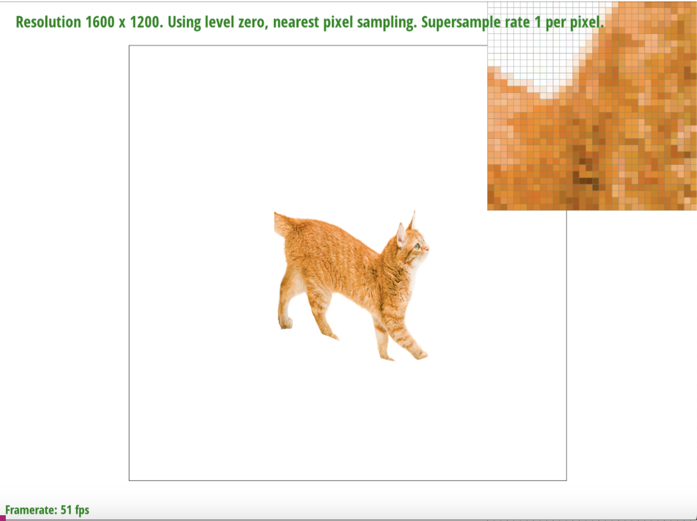 | 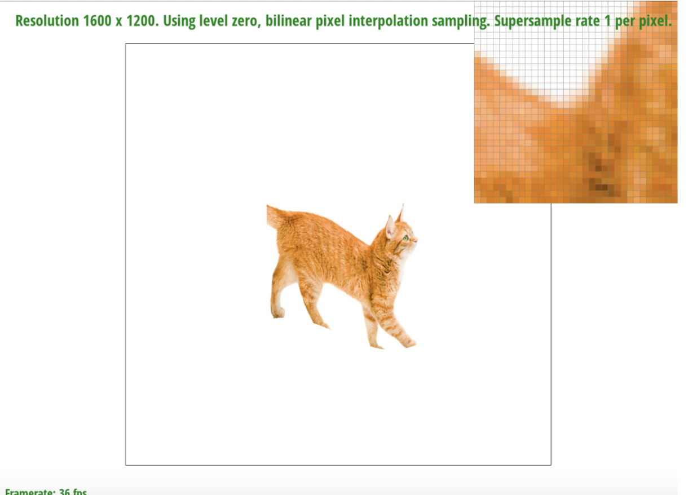 | 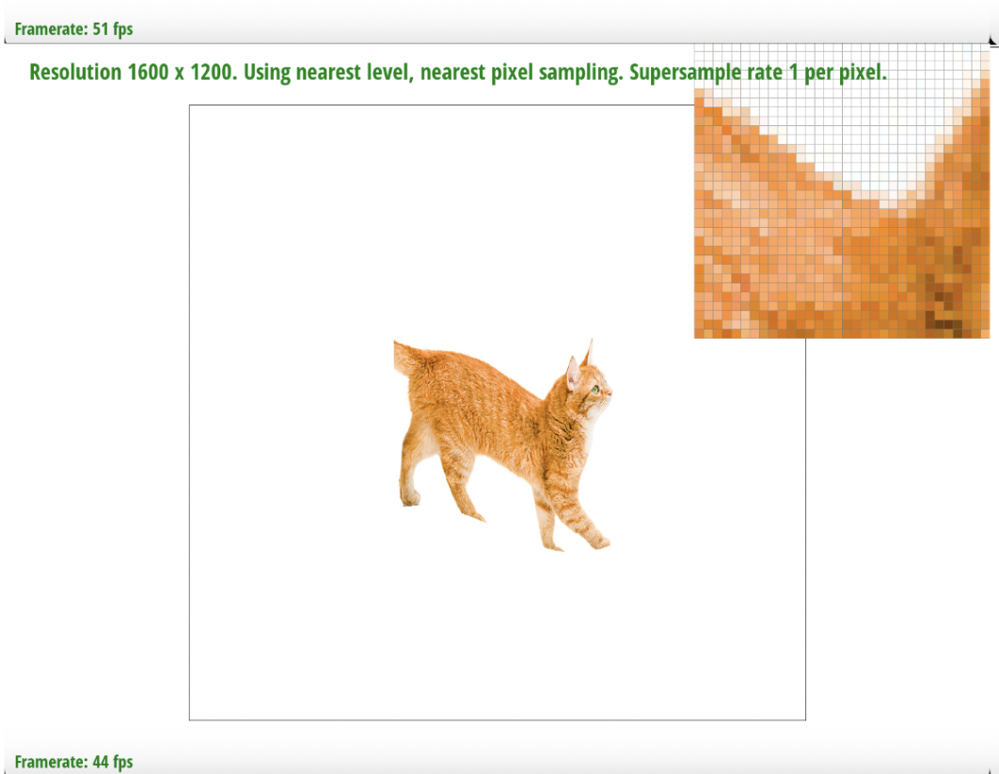 | 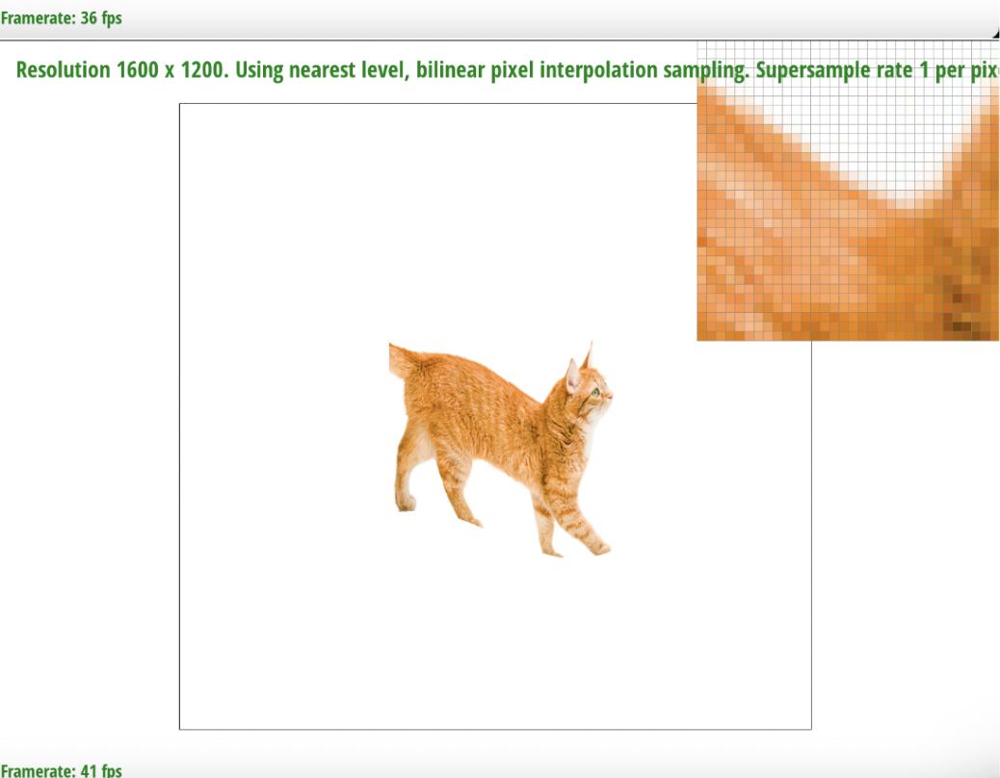 |
If you are not participating in the optional art competition, don't worry about this section!
We didn't have time to create any :(